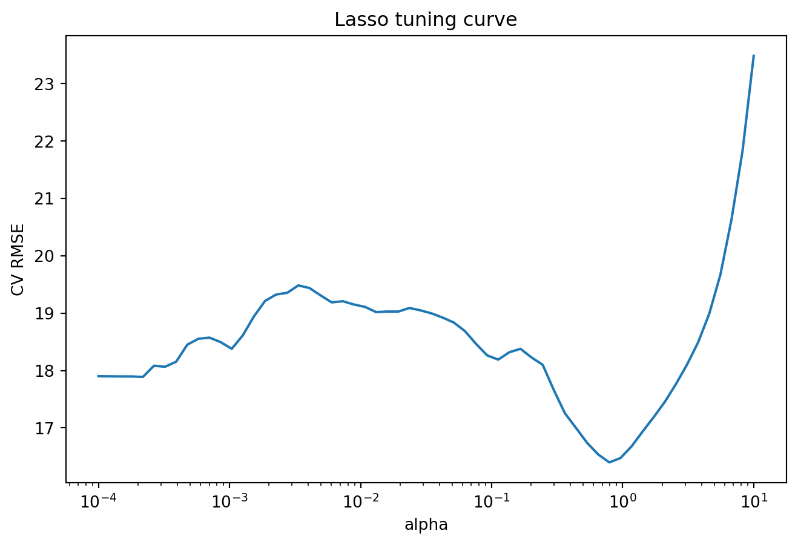
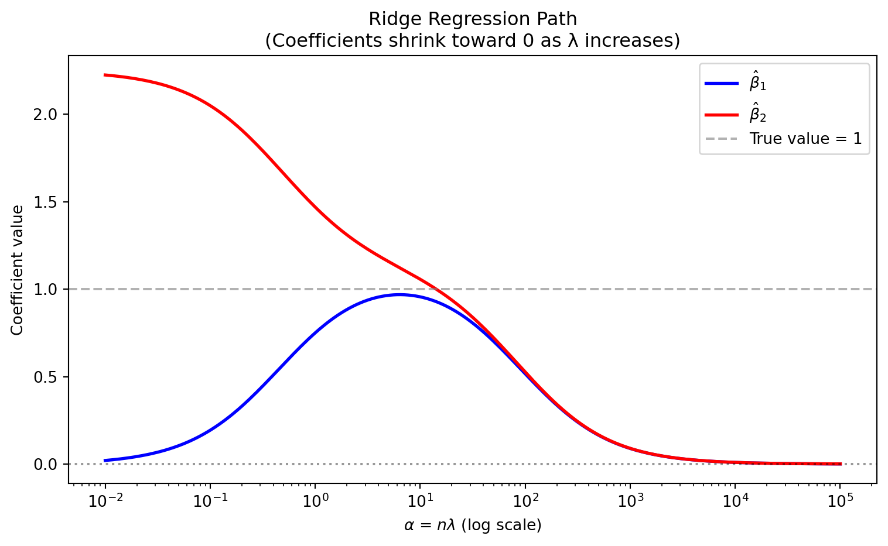

import numpy as np
np.random.seed(1)
n = 100
p = 20
X = np.random.randn(n, p)
X[:, 1:] += 0.8 * X[:, :-1] # introduce correlation
beta = np.zeros(p)
beta[:5] = [5, 4, 3, 2, 1]
y = X @ beta + np.random.randn(n)3 Regularization
ridge + lasso
\[ \require{physics} \require{braket} \]
\[ \newcommand{\dl}[1]{{\hspace{#1mu}\mathrm d}} \newcommand{\me}{{\mathrm e}} \newcommand{\argmin}{\operatorname{argmin}} \newcommand{\rss}{\mathrm{RSS}} \newcommand{\ols}{\mathrm{OLS}} \newcommand{\mle}{\mathrm{MLE}} \]
$$
$$
\[ \newcommand{\pdfbinom}{{\tt binom}} \newcommand{\pdfbeta}{{\tt beta}} \newcommand{\pdfpois}{{\tt poisson}} \newcommand{\pdfgamma}{{\tt gamma}} \newcommand{\pdfnormal}{{\tt norm}} \newcommand{\pdfexp}{{\tt expon}} \]
\[ \newcommand{\distbinom}{\operatorname{B}} \newcommand{\distbeta}{\operatorname{Beta}} \newcommand{\distgamma}{\operatorname{Gamma}} \newcommand{\distexp}{\operatorname{Exp}} \newcommand{\distpois}{\operatorname{Poisson}} \newcommand{\distnormal}{\operatorname{\mathcal N}} \]
3.1 A Short History of Ridge Regression
Ridge regression was introduced as a remedy for instability in ordinary least squares when predictors are highly correlated. The idea of stabilizing an inverse problem by adding a penalty term originates from Tikhonov (1963) in numerical analysis, where a regularization term was added to ill-posed problems.
In statistics, Hoerl and Kennard (1970) formally introduced ridge regression to address multicollinearity in linear regression. Later work connected ridge regression to generalized inverses, biased estimation, Bayesian regression, and other regularization methods.
from sklearn.linear_model import Ridge, Lasso
ridge = Ridge(alpha=1.0)
lasso = Lasso(alpha=0.1)
ridge.fit(X, y)
lasso.fit(X, y)
print("Ridge coefficients:")
print(ridge.coef_)
print("\nLasso coefficients:")
print(lasso.coef_)Ridge coefficients:
[ 4.9324473 4.07089581 2.73057897 1.97982673 1.14010582 -0.08110964
0.09262279 -0.18935595 0.17908169 -0.16527128 0.20745328 -0.20986971
0.06778419 -0.04054063 0.20933508 -0.26448404 0.17264939 -0.2565885
0.27143576 -0.02401495]
Lasso coefficients:
[ 4.83773632 4.13515684 2.6200961 2.05634626 0.9704947 0.
-0. -0. 0. 0. 0. -0.
-0.01548297 0.03554987 0. -0.03744205 -0. -0.
0.06729654 0. ]3.2 Ridge and Lasso in sklearn
- Big picture
Both ridge and lasso are regularized versions of linear regression.
Ordinary least squares minimizes
RSS
Ridge adds an L2 penalty:
Lasso adds an L1 penalty:
Main effect:
- ridge shrinks coefficients toward 0
- lasso shrinks coefficients and may set some exactly to 0
So:
- ridge is mainly for shrinkage
- lasso is mainly for shrinkage + variable selection
- When to use them
Use ridge when
- many predictors contribute a little
- predictors are strongly correlated
- prediction is more important than variable selection
Use lasso when
- you believe only a subset of predictors matter
- you want a sparser model
- interpretability matters
A common practical rule:
- start with ridge if you want stability
- start with lasso if you want selection
- Important preprocessing: standardization
For ridge and lasso, predictors should usually be standardized first.
Reason: the penalty acts on coefficient size, so variables on larger scales would otherwise be penalized differently.
In sklearn, the cleanest way is a pipeline.
- Exmaple
import numpy as np
from sklearn.model_selection import train_test_split
np.random.seed(1)
n = 100
p = 20
X = np.random.randn(n, p)
X[:, 1:] += 0.8 * X[:, :-1] # introduce correlation
beta = np.zeros(p)
beta[:5] = [5, 4, 3, 2, 1]
y = X @ beta + np.random.randn(n)
X_train, X_test, y_train, y_test = train_test_split(X, y, test_size=0.3, random_state=0)import numpy as np
from sklearn.model_selection import train_test_split
rng = np.random.default_rng(0)
n = 120
p = 200
# latent factors to induce strong correlation
Z = rng.normal(size=(n, 10))
A = rng.normal(size=(10, p))
X = Z @ A + 0.5 * rng.normal(size=(n, p))
# true coefficients: only a few are nonzero
beta = np.zeros(p)
beta[:10] = [8, 7, 6, 5, 4, 3, 2, 1.5, 1, 0.5]
# response with larger noise
y = X @ beta + 15 * rng.normal(size=n)
X_train, X_test, y_train, y_test = train_test_split(X, y, test_size=0.3, random_state=0)import numpy as np
from sklearn.model_selection import train_test_split
rng = np.random.default_rng(0)
n = 150
p = 100
k = 12
# moderately correlated predictors
Z = rng.normal(size=(n, k))
A = rng.normal(size=(k, p))
X = Z @ A + 0.8 * rng.normal(size=(n, p))
# sparse true coefficients
beta = np.zeros(p)
beta[:10] = [8, 7, 6, 5, 4, 3, 2, 1.5, 1, 0.5]
# moderate noise
y = X @ beta + 12 * rng.normal(size=n)
X_train, X_test, y_train, y_test = train_test_split(X, y, test_size=0.3, random_state=0)- baseline: OLS
from sklearn.pipeline import Pipeline
from sklearn.preprocessing import StandardScaler
from sklearn.linear_model import LinearRegression
from sklearn.metrics import mean_squared_error, r2_score
ols_pipe = Pipeline(
[
("scaler", StandardScaler()),
("model", LinearRegression()),
]
)
ols_pipe.fit(X_train, y_train)
y_pred_ols = ols_pipe.predict(X_test)
print("OLS")
print("Test RMSE:", mean_squared_error(y_test, y_pred_ols))
print("Test R^2 :", r2_score(y_test, y_pred_ols))OLS
Test RMSE: 499.4156845394399
Test R^2 : 0.7010769019580245from sklearn.linear_model import Ridge, Lasso
ridge_pipe = Pipeline(
[
("scaler", StandardScaler()),
("model", Ridge(alpha=1.0)),
]
)
lasso_pipe = Pipeline(
[
("scaler", StandardScaler()),
("model", Lasso(alpha=0.1, max_iter=10000)),
]
)
ridge_pipe.fit(X_train, y_train)
lasso_pipe.fit(X_train, y_train)
y_pred_ridge = ridge_pipe.predict(X_test)
y_pred_lasso = lasso_pipe.predict(X_test)
print("Ridge")
print("Test RMSE:", mean_squared_error(y_test, y_pred_ridge))
print("Test R^2 :", r2_score(y_test, y_pred_ridge))
print("\nLasso")
print("Test RMSE:", mean_squared_error(y_test, y_pred_lasso))
print("Test R^2 :", r2_score(y_test, y_pred_lasso))Ridge
Test RMSE: 443.09397649159723
Test R^2 : 0.7347880167224773
Lasso
Test RMSE: 505.21014647932395
Test R^2 : 0.6976086518245634To inspect coefficients:
ridge_coef = ridge_pipe.named_steps["model"].coef_
lasso_coef = lasso_pipe.named_steps["model"].coef_
print("Number of nonzero ridge coefficients:", np.sum(ridge_coef != 0))
print("Number of nonzero lasso coefficients:", np.sum(lasso_coef != 0))
print("\nRidge coefficients:")
print(ridge_coef)
print("\nLasso coefficients:")
print(lasso_coef)Number of nonzero ridge coefficients: 200
Number of nonzero lasso coefficients: 60
Ridge coefficients:
[ 9.89238938 13.4114031 3.75885477 7.27037474 2.98667506
10.86355683 0.99409051 2.29690882 -1.03110913 3.92905146
1.3339394 2.20765957 -2.33573794 8.63650993 1.4119745
-3.50349133 5.716205 2.64930741 3.62797346 -2.9059692
1.84299578 0.09082045 2.53955916 -1.72860233 4.504115
4.8113026 3.65947679 -0.17424799 -9.49210698 5.54690314
-0.41507465 2.76221788 1.2136196 -1.17439496 -0.67003544
-3.14211883 -4.84649327 0.3601491 -2.8265535 2.10849976
5.96140812 1.96018954 0.34384225 0.27940953 2.70820556
0.17285487 2.23483203 7.41678267 -4.08289185 -4.66513464
5.21372349 1.06058177 -2.53368537 -3.23123973 3.52864092
6.00173229 3.13475828 -3.27441516 -11.1916757 -4.41256525
-0.10891258 3.7118834 4.84742547 -1.63270029 2.08144942
-4.79006759 3.76042788 -2.85663275 1.4016512 1.47236478
1.32434884 3.44917607 5.18691571 -4.19561561 0.08344297
-2.07988223 0.59013335 -0.8246256 -1.1915025 2.68914337
-1.68205804 -3.92598635 -5.23848306 3.53811188 1.36957561
4.2704495 -0.23473902 1.39363417 5.72872327 -1.45982696
2.67333157 -2.46548498 6.66446265 -0.56806727 4.64947681
-2.6889517 -2.65546268 0.69480919 9.19667212 1.20283814
2.07316355 0.78152218 -1.70650018 3.57277067 2.42887534
-0.32965205 -3.34067872 1.78880306 0.85501052 1.69544541
-2.84439791 -1.30658015 -1.84337634 -6.17408875 -1.33653708
-0.62955393 5.80592659 -1.10346407 2.66110649 -3.97626034
-0.45406529 1.20465005 0.44826796 -1.01487977 -2.77426242
-3.46056366 6.8489757 -2.50507771 0.73377051 -0.90651135
4.7258524 5.55246823 -6.06178113 -5.80015131 2.0576238
3.50914051 -2.84498768 -3.82580895 -4.05401475 -5.9547239
0.18351166 -3.42739334 3.6083107 0.77389811 5.44388057
-5.44982507 7.00278456 1.11367739 5.42552768 5.82791497
0.20001807 0.1973067 3.25779104 -7.22726125 -0.3086186
-1.35608818 5.01864086 3.79851868 4.52578822 -3.26681311
-0.63859809 -2.02599414 -5.9915473 2.33190956 4.04669447
2.28795818 1.50339305 -6.1310815 9.13302447 -1.90392652
0.19626344 6.79091901 3.63729478 6.98115881 -2.54539628
-3.65878333 2.23764608 4.07268995 -5.01415212 -0.94293355
0.66131275 7.28774378 -5.42074885 -3.85481009 -2.34553499
-1.32624478 -0.94173441 -0.74288612 5.23203804 3.22228097
2.35451918 -0.83786889 -2.53530712 1.5713255 -4.29409237
-2.00536671 3.38148548 -3.78586785 4.71729853 8.22167659]
Lasso coefficients:
[ 1.76425486e+01 3.09809930e+01 8.49530272e-01 7.07962629e+00
0.00000000e+00 1.93212427e+01 0.00000000e+00 0.00000000e+00
-0.00000000e+00 0.00000000e+00 0.00000000e+00 0.00000000e+00
-0.00000000e+00 1.25210176e+01 0.00000000e+00 0.00000000e+00
0.00000000e+00 0.00000000e+00 -0.00000000e+00 0.00000000e+00
0.00000000e+00 -0.00000000e+00 0.00000000e+00 -0.00000000e+00
0.00000000e+00 5.63729329e+00 0.00000000e+00 0.00000000e+00
-1.33256934e+01 1.04914763e+01 0.00000000e+00 -0.00000000e+00
0.00000000e+00 0.00000000e+00 0.00000000e+00 -0.00000000e+00
-0.00000000e+00 0.00000000e+00 -0.00000000e+00 0.00000000e+00
2.54319937e-02 0.00000000e+00 -0.00000000e+00 -0.00000000e+00
1.81394688e+00 0.00000000e+00 0.00000000e+00 1.39859162e+01
-4.43639278e-01 -8.42178102e+00 4.21737159e+00 0.00000000e+00
-0.00000000e+00 0.00000000e+00 0.00000000e+00 0.00000000e+00
0.00000000e+00 -4.06805760e+00 -1.57019001e+01 -1.63517148e+00
-0.00000000e+00 4.19506839e+00 0.00000000e+00 -0.00000000e+00
0.00000000e+00 -0.00000000e+00 0.00000000e+00 -0.00000000e+00
0.00000000e+00 0.00000000e+00 0.00000000e+00 3.75174033e-01
3.80077195e+00 -2.54118475e+00 0.00000000e+00 -0.00000000e+00
-0.00000000e+00 0.00000000e+00 -0.00000000e+00 0.00000000e+00
-0.00000000e+00 -0.00000000e+00 -2.23497649e+00 0.00000000e+00
0.00000000e+00 2.56392138e+00 9.03040436e-01 -0.00000000e+00
0.00000000e+00 -0.00000000e+00 0.00000000e+00 0.00000000e+00
2.78943600e+00 0.00000000e+00 4.61256960e+00 -0.00000000e+00
-0.00000000e+00 0.00000000e+00 1.93364507e+01 -0.00000000e+00
0.00000000e+00 -0.00000000e+00 -0.00000000e+00 4.36034046e+00
-0.00000000e+00 -0.00000000e+00 -4.85235306e+00 0.00000000e+00
-0.00000000e+00 0.00000000e+00 -0.00000000e+00 -0.00000000e+00
-1.76827999e+00 -1.16377125e+01 -0.00000000e+00 0.00000000e+00
1.80303867e+01 -0.00000000e+00 0.00000000e+00 -0.00000000e+00
0.00000000e+00 0.00000000e+00 0.00000000e+00 -0.00000000e+00
-3.49293033e-01 -1.48262709e+00 8.20912505e+00 -0.00000000e+00
-0.00000000e+00 0.00000000e+00 2.14044605e+00 0.00000000e+00
-1.95998113e+00 -6.22196194e+00 0.00000000e+00 0.00000000e+00
0.00000000e+00 -0.00000000e+00 -0.00000000e+00 -0.00000000e+00
0.00000000e+00 -0.00000000e+00 5.31473921e+00 0.00000000e+00
2.90621645e+00 -0.00000000e+00 1.20630243e+01 0.00000000e+00
4.63560567e+00 2.57473420e+00 -0.00000000e+00 0.00000000e+00
0.00000000e+00 -1.15395416e+01 -0.00000000e+00 -6.20446923e+00
1.25932634e+01 0.00000000e+00 1.54350695e+00 -2.34214100e+00
-0.00000000e+00 -0.00000000e+00 -7.23392426e+00 0.00000000e+00
0.00000000e+00 0.00000000e+00 -0.00000000e+00 -0.00000000e+00
1.14416656e+01 -0.00000000e+00 0.00000000e+00 8.37556455e+00
0.00000000e+00 0.00000000e+00 0.00000000e+00 -0.00000000e+00
-0.00000000e+00 0.00000000e+00 -0.00000000e+00 -4.01909770e-01
0.00000000e+00 5.70274416e+00 -4.70991525e+00 -4.24803383e+00
-0.00000000e+00 -0.00000000e+00 0.00000000e+00 -0.00000000e+00
3.56096731e+00 0.00000000e+00 0.00000000e+00 -0.00000000e+00
-0.00000000e+00 1.12346104e+00 -0.00000000e+00 -0.00000000e+00
0.00000000e+00 -0.00000000e+00 7.94989016e+00 1.52861494e+01]You will usually see:
- ridge: almost all coefficients nonzero
- lasso: some coefficients exactly zero
- Tuning with cross-validation
from sklearn.linear_model import RidgeCV
alphas = np.logspace(-4, 4, 100)
ridge_cv_pipe = Pipeline(
[
("scaler", StandardScaler()),
("model", RidgeCV(alphas=alphas, cv=5)),
]
)
ridge_cv_pipe.fit(X_train, y_train)
y_pred_ridge_cv = ridge_cv_pipe.predict(X_test)
best_alpha_ridge = ridge_cv_pipe.named_steps["model"].alpha_
print("Best ridge alpha:", best_alpha_ridge)
print("RidgeCV Test RMSE:", mean_squared_error(y_test, y_pred_ridge_cv))
print("RidgeCV Test R^2 :", r2_score(y_test, y_pred_ridge_cv))Best ridge alpha: 10.235310218990268
RidgeCV Test RMSE: 367.42187419874745
RidgeCV Test R^2 : 0.7800812262731308from sklearn.linear_model import LassoCV
lasso_cv_pipe = Pipeline(
[
("scaler", StandardScaler()),
("model", LassoCV(cv=5, max_iter=10000, random_state=0)),
]
)
lasso_cv_pipe.fit(X_train, y_train)
y_pred_lasso_cv = lasso_cv_pipe.predict(X_test)
best_alpha_lasso = lasso_cv_pipe.named_steps["model"].alpha_
print("Best lasso alpha:", best_alpha_lasso)
print("LassoCV Test RMSE:", mean_squared_error(y_test, y_pred_lasso_cv))
print("LassoCV Test R^2 :", r2_score(y_test, y_pred_lasso_cv))Best lasso alpha: 0.8439388289292693
LassoCV Test RMSE: 393.45871794811694
LassoCV Test R^2 : 0.7644969860545365from sklearn.model_selection import GridSearchCV
ridge_grid_pipe = Pipeline(
[
("scaler", StandardScaler()),
("model", Ridge()),
]
)
param_grid = {"model__alpha": np.logspace(-4, 4, 100)}
ridge_grid = GridSearchCV(
ridge_grid_pipe,
param_grid=param_grid,
cv=5,
scoring="neg_root_mean_squared_error",
)
ridge_grid.fit(X_train, y_train)
print("Best ridge alpha from GridSearchCV:", ridge_grid.best_params_["model__alpha"])
print("Best CV score:", ridge_grid.best_score_)
best_ridge_grid = ridge_grid.best_estimator_
y_pred_best_ridge_grid = best_ridge_grid.predict(X_test)
print("Test RMSE:", mean_squared_error(y_test, y_pred_best_ridge_grid))
print("Test R^2 :", r2_score(y_test, y_pred_best_ridge_grid))Best ridge alpha from GridSearchCV: 17.886495290574352
Best CV score: -17.340982772627893
Test RMSE: 357.4834153037493
Test R^2 : 0.7860298478615685lasso_grid_pipe = Pipeline(
[
("scaler", StandardScaler()),
("model", Lasso(max_iter=10000)),
]
)
param_grid = {"model__alpha": np.logspace(-4, 1, 100)}
lasso_grid = GridSearchCV(
lasso_grid_pipe,
param_grid=param_grid,
cv=5,
scoring="neg_root_mean_squared_error",
)
lasso_grid.fit(X_train, y_train)
print("Best lasso alpha from GridSearchCV:", lasso_grid.best_params_["model__alpha"])
print("Best CV score:", lasso_grid.best_score_)
best_lasso_grid = lasso_grid.best_estimator_
y_pred_best_lasso_grid = best_lasso_grid.predict(X_test)
print("Test RMSE:", mean_squared_error(y_test, y_pred_best_lasso_grid))
print("Test R^2 :", r2_score(y_test, y_pred_best_lasso_grid))Best lasso alpha from GridSearchCV: 0.774263682681127
Best CV score: -16.420051223425133
Test RMSE: 396.04320146370355
Test R^2 : 0.7629500546239988- plot coeffient path
import matplotlib.pyplot as plt
from sklearn.linear_model import lasso_path
from sklearn.preprocessing import StandardScaler
scaler = StandardScaler()
X_train_scaled = scaler.fit_transform(X_train)
alphas_lasso, coefs_lasso, _ = lasso_path(X_train_scaled, y_train)
plt.figure(figsize=(8, 5))
plt.plot(alphas_lasso, coefs_lasso.T)
plt.xscale("log")
plt.gca().invert_xaxis()
plt.xlabel("alpha")
plt.ylabel("coefficient")
plt.title("Lasso coefficient paths")
plt.axhline(0, linestyle="--", linewidth=1)
plt.show()
alphas_ridge = np.logspace(-4, 4, 100)
coefs_ridge = []
for a in alphas_ridge:
ridge = Ridge(alpha=a)
ridge.fit(X_train_scaled, y_train)
coefs_ridge.append(ridge.coef_)
coefs_ridge = np.array(coefs_ridge)
plt.figure(figsize=(8, 5))
plt.plot(alphas_ridge, coefs_ridge)
plt.xscale("log")
plt.gca().invert_xaxis()
plt.xlabel("alpha")
plt.ylabel("coefficient")
plt.title("Ridge coefficient paths")
plt.axhline(0, linestyle="--", linewidth=1)
plt.show()
10 cv error
from sklearn.model_selection import cross_val_score
alphas = np.logspace(-4, 4, 60)
cv_rmse_ridge = []
for a in alphas:
pipe = Pipeline(
[
("scaler", StandardScaler()),
("model", Ridge(alpha=a)),
]
)
scores = cross_val_score(
pipe,
X_train,
y_train,
cv=5,
scoring="neg_root_mean_squared_error",
)
cv_rmse_ridge.append(-scores.mean())
plt.figure(figsize=(8, 5))
plt.plot(alphas, cv_rmse_ridge)
plt.xscale("log")
plt.xlabel("alpha")
plt.ylabel("CV RMSE")
plt.title("Ridge tuning curve")
plt.show()
alphas = np.logspace(-4, 1, 60)
cv_rmse_lasso = []
for a in alphas:
pipe = Pipeline(
[
("scaler", StandardScaler()),
("model", Lasso(alpha=a, max_iter=10000)),
]
)
scores = cross_val_score(
pipe,
X_train,
y_train,
cv=5,
scoring="neg_root_mean_squared_error",
)
cv_rmse_lasso.append(-scores.mean())
plt.figure(figsize=(8, 5))
plt.plot(alphas, cv_rmse_lasso)
plt.xscale("log")
plt.xlabel("alpha")
plt.ylabel("CV RMSE")
plt.title("Lasso tuning curve")
plt.show()
- a comparble table
results = []
models = {
"OLS": ols_pipe,
"RidgeCV": ridge_cv_pipe,
"LassoCV": lasso_cv_pipe,
}
for name, model in models.items():
y_pred = model.predict(X_test)
rmse = mean_squared_error(y_test, y_pred)
r2 = r2_score(y_test, y_pred)
if name == "OLS":
n_nonzero = np.sum(model.named_steps["model"].coef_ != 0)
alpha = None
else:
n_nonzero = np.sum(model.named_steps["model"].coef_ != 0)
alpha = model.named_steps["model"].alpha_
results.append((name, alpha, rmse, r2, n_nonzero))
for row in results:
print(row)
import pandas as pd
df_results = pd.DataFrame(
results,
columns=["Model", "Best alpha", "Test RMSE", "Test R^2", "Nonzero coefficients"],
)
df_results('OLS', None, 499.4156845394399, 0.7010769019580245, np.int64(200))
('RidgeCV', np.float64(10.235310218990268), 367.42187419874745, 0.7800812262731308, np.int64(200))
('LassoCV', np.float64(0.8439388289292693), 393.45871794811694, 0.7644969860545365, np.int64(14))| Model | Best alpha | Test RMSE | Test R^2 | Nonzero coefficients | |
|---|---|---|---|---|---|
| 0 | OLS | NaN | 499.415685 | 0.701077 | 200 |
| 1 | RidgeCV | 10.235310 | 367.421874 | 0.780081 | 200 |
| 2 | LassoCV | 0.843939 | 393.458718 | 0.764497 | 14 |
- Interpreting alpha
A larger alpha means a stronger penalty.
As alpha increases:
ridge coefficients shrink more lasso coefficients shrink more, and more of them become zero
Special cases:
alpha = 0 corresponds to ordinary least squares in theory in practice, for OLS just use LinearRegression()
3.3 What Is Ridge Regression?
Ridge regression is a regularized version of ordinary least squares (OLS). It is especially useful when predictors are highly correlated or when the matrix \(X^\top X\) is nearly singular, because in such settings the OLS estimator can be unstable.
Recall the linear model
\[ y = X\beta + \varepsilon. \]
When \(X^\top X\) is invertible, the OLS estimator is
\[ \hat{\beta}_{\mathrm{OLS}} = (X^\top X)^{-1}X^\top y. \]
Ridge regression modifies the least-squares criterion by adding a quadratic penalty:
\[ \hat{\beta}_{\mathrm{ridge}} = \arg\min_{\beta} \left\{ \lVert y - X\beta \rVert_2^2 + \lambda \lVert \beta \rVert_2^2 \right\}, \]
where \(\lambda \ge 0\) is a tuning parameter.
Equivalently,
\[ \hat{\beta}_{\mathrm{ridge}} = (X^\top X + \lambda I)^{-1}X^\top y. \]
The penalty shrinks coefficients toward zero. Larger values of \(\lambda\) produce stronger shrinkage.
3.4 Why Ridge Regression Helps
OLS is unbiased under the classical linear model assumptions, but it can have high variance when predictors are strongly correlated. Ridge regression introduces bias, but it often reduces variance enough to improve predictive performance.
This is a standard example of the bias-variance tradeoff.
NoteKey Properties
- If \(\lambda = 0\), ridge regression reduces to OLS.
- If \(\lambda > 0\), the matrix \(X^\top X + \lambda I\) is invertible even when \(X^\top X\) is singular.
- Ridge shrinks coefficients continuously toward zero.
- Ridge usually does not set coefficients exactly to zero.
- Ridge is particularly useful under multicollinearity.
3.5 Choosing \(\lambda\)
The tuning parameter \(\lambda\) determines how much shrinkage is applied.
- Small \(\lambda\) gives a model close to OLS.
- Large \(\lambda\) gives stronger regularization.
In practice, the modern standard is to choose \(\lambda\) by cross-validation. If \(\mathrm{CV}(\lambda)\) denotes the cross-validation error, we choose
\[ \hat{\lambda} = \arg\min_{\lambda} \mathrm{CV}(\lambda). \]
Classical ridge analysis also uses ridge trace plots and generalized cross-validation.
3.6 Fitting Ridge Regression in R
The glmnet package is a standard implementation:
Here alpha = 0 specifies ridge regression.
3.7 Scaling Issues of Ridge Regression
Ridge regression is sensitive to the scale of the predictors, so the variables are usually standardized before fitting the model.
The usual standardization is
\[ x_j^* = \frac{x_j - \bar{x}_j}{s_j}, \]
so that each predictor has mean \(0\) and standard deviation \(1\).
This matters because the penalty acts directly on the coefficients. If predictors are measured on very different scales, then the penalty will not be applied fairly across variables.
In practice:
- the predictors are standardized before fitting the model;
- the intercept is typically left unpenalized;
- software such as
glmnetusually performs standardization automatically.
3.8 Relation to Tikhonov Regularization
Ridge regression is the statistical form of Tikhonov regularization. In inverse problems, Tikhonov regularization stabilizes an ill-posed problem by adding a quadratic penalty. Ridge regression applies the same idea to linear regression.
3.9 Summary
The main ideas of ridge regression are:
- it adds an \(L_2\) penalty to least squares;
- it shrinks coefficients toward zero;
- it reduces variance and can improve prediction;
- it is particularly useful when predictors are highly correlated;
- it usually keeps all variables in the model.
3.10 References
- Hoerl, A. E., & Kennard, R. W. (1970). Ridge regression: Biased estimation for nonorthogonal problems. Technometrics, 12(1), 55-67.
- Marquardt, D. W. (1970). Generalized inverses, ridge regression, biased linear estimation, and nonlinear estimation. Technometrics, 12(3), 591-612.
- Tibshirani, R. (1996). Regression shrinkage and selection via the lasso. Journal of the Royal Statistical Society Series B, 58(1), 267-288.
- Tikhonov, A. N. (1963). Solution of incorrectly formulated problems and the regularization method. Soviet Mathematics Doklady, 4, 1035-1038.
3.11 Ridge Regression
Ridge regression was proposed by Hoerl and Kennard (1970), and is also a special case of Tikhonov regularization. The essential idea is simple: knowing that the ordinary least squares (OLS) solution is not unique in an ill-posed problem (i.e., \(\mathbf{X}^\top\mathbf{X}\) is not invertible), ridge regression adds a ridge (diagonal matrix) to \(\mathbf{X}^\top\mathbf{X}\):
\[ \widehat{\boldsymbol{\beta}}^{\text{ridge}} = (\mathbf{X}^\top\mathbf{X} + n\lambda \mathbf{I})^{-1} \mathbf{X}^\top\mathbf{y} \]
It provides a solution to linear regression when multicollinearity occurs, especially when the number of variables \(p\) is larger than the sample size \(n\). Alternatively, this is the solution of a regularized least squares estimator — we add an \(\ell_2\) penalty to the residual sum of squares:
\[ \begin{align} \widehat{\boldsymbol{\beta}}^{\text{ridge}} &= \arg\min_{\boldsymbol{\beta}} \|\mathbf{y} - \mathbf{X}\boldsymbol{\beta}\|_2^2 + n\lambda\|\boldsymbol{\beta}\|_2^2 \\ &= \arg\min_{\boldsymbol{\beta}} \frac{1}{n}\sum_{i=1}^n (y_i - x_i^\top \boldsymbol{\beta})^2 + \lambda\sum_{j=1}^p \beta_j^2 \end{align} \]
for some penalty \(\lambda > 0\). Ridge regression is used extensively in genetic analyses to address “small-\(n\)-large-\(p\)” problems. We will start with a motivation example and then discuss the crucial topic: the bias-variance trade-off.
3.13 Bias-Variance Trade-off
3.13.1 Decomposition
For any estimator \(\hat{f}(x)\) of the true function \(f(x)\), the expected prediction error can be decomposed as:
\[ \mathbb{E}[(y - \hat{f}(x))^2] = \underbrace{\text{Bias}^2[\hat{f}(x)]}_{\text{systematic error}} + \underbrace{\text{Var}[\hat{f}(x)]}_{\text{random error}} + \underbrace{\sigma^2}_{\text{irreducible noise}} \]
- Bias = how far off the expected prediction is from the truth
- Variance = how much the prediction changes with different training data
- \(\sigma^2\) = irreducible noise, cannot be reduced
3.13.2 Ridge vs OLS: Analytical Perspective
For OLS: unbiased, but can have high variance (especially when \(\mathbf{X}^\top\mathbf{X}\) is near-singular).
For Ridge: - Bias is introduced (predictions are shrunk toward zero) - Variance is reduced (the added ridge stabilizes \((\mathbf{X}^\top\mathbf{X} + n\lambda\mathbf{I})^{-1}\))
The bias-variance trade-off means that a small increase in bias can yield a large decrease in variance, reducing overall prediction error.
# Demonstrate bias-variance trade-off numerically
n_sim = 500
n_train = 30
lambdas = np.logspace(-3, 2, 50)
# True coefficients
beta_true = np.array([1.0, 1.0])
bias2_list = []
var_list = []
mse_list = []
for lam in lambdas:
preds_at_x = []
x_test = np.array([[1.0, 1.0]]) # test point
for _ in range(n_sim):
rng_s = np.random.default_rng()
X_s = rng_s.multivariate_normal(mean, Sigma, size=n_train)
y_s = rng_s.normal(loc=X_s @ beta_true, scale=1)
model = Ridge(alpha=lam * n_train, fit_intercept=False).fit(X_s, y_s)
preds_at_x.append(model.predict(x_test)[0])
preds = np.array(preds_at_x)
true_val = x_test @ beta_true
bias2 = (np.mean(preds) - true_val[0])**2
var = np.var(preds)
mse = bias2 + var # + sigma^2 (ignored here, same for all lambda)
bias2_list.append(bias2)
var_list.append(var)
mse_list.append(mse)
fig, ax = plt.subplots(figsize=(8, 5))
ax.semilogx(lambdas, bias2_list, 'r-', label='Bias²', linewidth=2)
ax.semilogx(lambdas, var_list, 'b-', label='Variance', linewidth=2)
ax.semilogx(lambdas, mse_list, 'k--', label='MSE (Bias² + Var)', linewidth=2)
ax.axvline(lambdas[np.argmin(mse_list)], color='gray', linestyle=':', label=f'Optimal λ ≈ {lambdas[np.argmin(mse_list)]:.3f}')
ax.set_xlabel(r'Regularization parameter $\lambda$ (log scale)')
ax.set_ylabel('Error')
ax.set_title('Bias-Variance Trade-off in Ridge Regression')
ax.legend()
plt.tight_layout()
plt.show()
print(f"Optimal lambda: {lambdas[np.argmin(mse_list)]:.4f}")
print(f"Min MSE: {min(mse_list):.4f}")
Optimal lambda: 0.0016
Min MSE: 0.03333.14 Selecting \(\lambda\) via Cross-Validation
In practice, \(\lambda\) is chosen by cross-validation — minimizing the held-out prediction error.
from sklearn.linear_model import RidgeCV
from sklearn.model_selection import KFold
# Candidate lambda values (sklearn uses alpha = n*lambda)
alphas = np.logspace(-2, 4, 100)
rng_cv = np.random.default_rng(42)
X_cv = rng_cv.multivariate_normal(mean, Sigma, size=100)
y_cv = rng_cv.normal(loc=X_cv @ beta_true, scale=1)
ridge_cv = RidgeCV(alphas=alphas, cv=5, fit_intercept=False).fit(X_cv, y_cv)
print(f"Best alpha (= n*lambda): {ridge_cv.alpha_:.4f}")
print(f"Best lambda: {ridge_cv.alpha_ / len(X_cv):.4f}")
print(f"Fitted coefficients: {ridge_cv.coef_}")Best alpha (= n*lambda): 4.0370
Best lambda: 0.0404
Fitted coefficients: [1.03405656 1.05497857]3.15 Ridge Regression Path
The regularization path shows how coefficients shrink as \(\lambda\) increases.
from sklearn.linear_model import Ridge
# Fit ridge for many alpha values and track coefficients
alphas_path = np.logspace(-2, 5, 200)
coefs = []
rng_path = np.random.default_rng(2)
X_path = rng_path.multivariate_normal(mean, Sigma, size=50)
y_path = rng_path.normal(loc=X_path @ beta_true, scale=1)
for a in alphas_path:
r = Ridge(alpha=a, fit_intercept=False).fit(X_path, y_path)
coefs.append(r.coef_)
coefs = np.array(coefs)
fig, ax = plt.subplots(figsize=(8, 5))
ax.semilogx(alphas_path, coefs[:, 0], 'b-', label=r'$\hat{\beta}_1$', linewidth=2)
ax.semilogx(alphas_path, coefs[:, 1], 'r-', label=r'$\hat{\beta}_2$', linewidth=2)
ax.axhline(1.0, color='gray', linestyle='--', alpha=0.6, label='True value = 1')
ax.axhline(0.0, color='black', linestyle=':', alpha=0.4)
ax.set_xlabel(r'$\alpha$ = $n\lambda$ (log scale)')
ax.set_ylabel('Coefficient value')
ax.set_title('Ridge Regression Path\n(Coefficients shrink toward 0 as λ increases)')
ax.legend()
plt.tight_layout()
plt.show()
As \(\lambda \to 0\), the ridge estimates approach OLS. As \(\lambda \to \infty\), all coefficients shrink to zero. The optimal \(\lambda\) balances bias and variance.
3.16 Summary
| Property | OLS | Ridge |
|---|---|---|
| Bias | 0 (unbiased) | > 0 (biased toward 0) |
| Variance | Can be very high | Reduced |
| Works when \(p > n\)? | No | Yes |
| Handles multicollinearity? | Poorly | Well |
| Solution | Closed-form | Closed-form |
| Penalty | None | \(\lambda \|\boldsymbol{\beta}\|_2^2\) |
Ridge regression is particularly useful when:
- Variables are highly correlated (multicollinearity)
- The number of predictors exceeds the sample size (\(p > n\))
- We want to trade a small bias for a large reduction in variance
The regularization parameter \(\lambda\) is typically chosen by cross-validation.